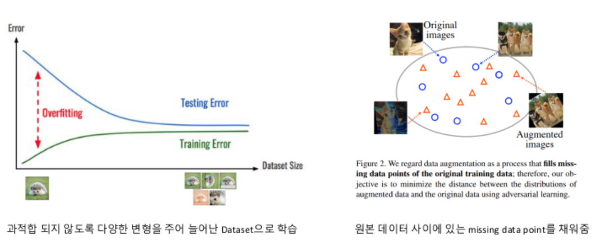

🛡
과적합(Overfitting) 방지
데이터에 다양한 변형을 주어 모델이 특정 샘플에만 과도하게 맞춰지지 않도록 합니다.
데이터에 다양한 변형을 주어 모델이 특정 샘플에만 과도하게 맞춰지지 않도록 합니다.
✂
Missing Points 보충
원본 데이터 사이의 공백을 메우듯 유사하지만 새로운 샘플을 만들어 분포를 더 촘촘하게 학습시킵니다.
원본 데이터 사이의 공백을 메우듯 유사하지만 새로운 샘플을 만들어 분포를 더 촘촘하게 학습시킵니다.
◎
특징 추출 강화
배경·위치·밝기가 달라져도 변하지 않는 데이터의 근본적 특징에 집중하도록 유도합니다.
배경·위치·밝기가 달라져도 변하지 않는 데이터의 근본적 특징에 집중하도록 유도합니다.
핵심 목표: 데이터의 본질적 특성은 유지하면서 다양한 형태를 경험하게 만들어 일반화 성능을 높이는 것
